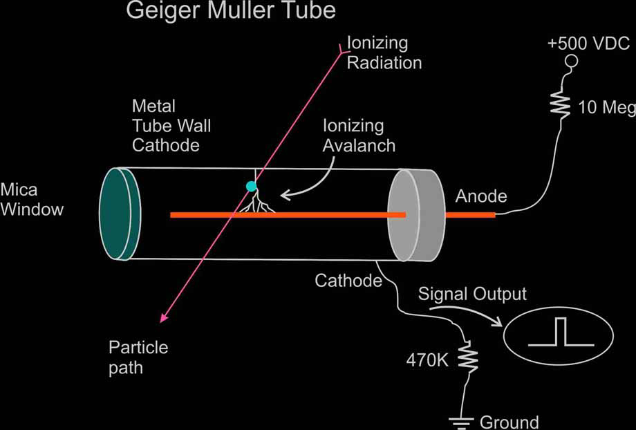
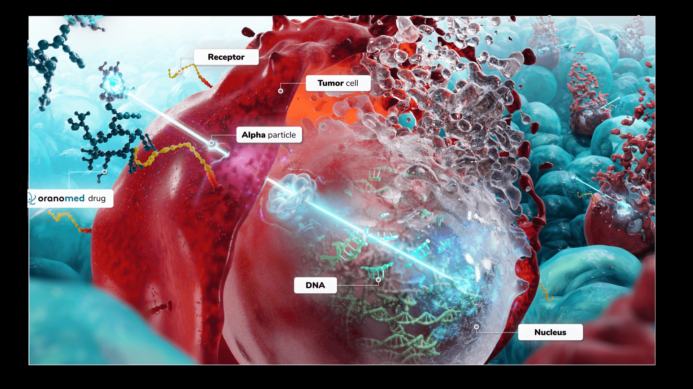
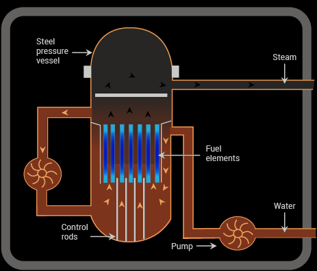

Radiation emitted by radioactive substances can be categorized into three main types: alpha (α), beta (β), and gamma (γ) radiation. Each type has distinct physical properties and behaviors.
Penetration Ability
Different types of radiation have different penetration abilities:
- Alpha (α): Stopped by paper or a few cm of air.
- Beta (β): Penetrates paper, stopped by thin aluminum.
- Gamma (γ): Requires lead or concrete shielding.
- Neutron: Highly penetrating; stopped by water, paraffin, or concrete.
Ionising Power
Ionising power is the ability to remove electrons from atoms:
- Alpha: Strongly ionising.
- Beta: Moderately ionising.
- Gamma: Weakly ionising.
- Neutron: Indirectly ionising—causes ionisation via collisions.
Deflection by Electric and Magnetic Fields
This tells us about their charge and how they behave in fields:
- Alpha: Deflected (positive charge).
- Beta: Deflected in opposite direction to alpha (negative charge).
- Gamma: Not deflected (neutral).
- Neutron: Not deflected (neutral), but has magnetic moment.
Speed
The speed varies with mass and energy:
- Alpha: ~5–7% of light speed.
- Beta: Up to ~99% of light speed.
- Gamma: Speed of light.
- Neutron: Depends on energy; thermal = ~2200 m/s, fast = ~10% of light speed.
Mass and Charge
Mass and charge help classify the radiation:
- Alpha: Mass = 4u, Charge = +2e.
- Beta: Mass ≈ 1/2000u, Charge = –1e.
- Gamma: No mass or charge.
- Neutron: Mass ≈ 1u, Charge = 0.
Detection Methods
Each type of radiation is detected using different techniques:
- Geiger-Müller (GM) tubes – detect all types but with varying sensitivity. 
- Cloud chambers – show tracks left by charged particles.
- Photographic film – darkens in response to exposure.
Uses of Radiation
Uses of Alpha Radiation
- Smoke Detectors: Alpha particles ionise air; smoke disrupts this, triggering the alarm.

- Static Eliminators: Used in industries to remove static electricity from materials.

- Medical Treatment: Some cancer therapies use alpha-emitting isotopes for targeted cell destruction. 
Uses of Beta Radiation
- Thickness Gauges: Measure the thickness of materials like paper, foil, or plastic during production.

- Medical Tracers: Used to trace the movement of substances through the body (e.g., phosphorus-32).
- Radiotherapy: Beta emitters like strontium-90 used to treat certain eye and bone conditions.
Uses of Gamma Radiation
- Medical Imaging and Treatment: Gamma cameras for diagnosis, cobalt-60 for cancer radiotherapy.

- Sterilisation: Kills bacteria on medical equipment and food without heat or chemicals.
- Industrial Radiography: Checks for cracks or flaws in metal structures or welds.
Uses of Neutron Radiation
- Neutron Activation Analysis: Identifies materials by detecting the radiation emitted after neutron absorption.

- Medical Isotope Production: Neutrons used in reactors to produce radioisotopes for diagnostics and treatment.

- Nuclear Reactors: Neutrons sustain the chain reaction in fission reactors. 
Comparison of Radiation Types
| Property | Alpha (α) | Beta (β) | Gamma (γ) | Neutron |
|---|---|---|---|---|
| Penetration | Stopped by paper or skin | Penetrates paper, stopped by aluminum | Penetrates most materials, reduced by lead/concrete | Highly penetrating, slowed by water or concrete |
| Ionizing Power | Very high | Moderate | Low | Indirect (via collisions) |
| Electric Charge | +2 | –1 | 0 | 0 |
| Mass | 4u | ~1/2000u | 0 | 1u |
| Deflection by Fields | Deflected (towards negative) | Deflected (towards positive) | Not deflected | Not deflected |
| Speed | ~5–7% of light speed | Up to 99% of light speed | Speed of light | Variable (e.g., 2200 m/s for thermal) |
| Typical Sources | Americium-241 | Strontium-90 | Cobalt-60 | Nuclear fission |
| Uses | Smoke detectors, static removal | Thickness gauges, tracers | Sterilization, imaging | Nuclear reactors, research |
Written by Thenura Dilruk